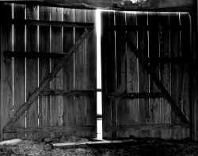

<!DOCTYPE HTML PUBLIC "-//W3C//DTD HTML 4.01 Transitional//EN"        "http://www.w3.org/TR/html4/loose.dtd">
<html lang="en">

<head>
<title>David Jauss:&nbsp; Quicksilver, Glass - Henderson State University</title>
<meta http-equiv="Content-Language" content="en-us">
<meta http-equiv="Content-Type" content="text/html; charset=windows-1252">
<meta name="GENERATOR" content="Microsoft FrontPage 5.0">
<meta name="ProgId" content="FrontPage.Editor.Document">
<meta name="copyright" content="Copyright © 2002 Henderson State University">
<meta name="rating" content="General">
</head>

<body background="images/ARlogoborderBROWN.jpg" link="#663300" vlink="#663300" alink="#663300" bgcolor="#FFFFFF"><div style="background:#241b2e;color:#fff;font-family:Arial,sans-serif;font-size:13px;padding:6px 14px;text-align:center;position:relative;z-index:9999;display:flex;align-items:center;justify-content:center;gap:10px;flex-wrap:wrap;"><span><a href="/books/arkansas-literary-forum" style="color:#fff;text-decoration:underline;">‚Üê Back to MarckBeggs.com</a> &nbsp;|&nbsp; <span style="opacity:.75;">Arkansas Literary Forum archive, preserved as originally published</span></span></div>

<div align="right">
  <table border="0" width="85%">
    <tr>
      <td width="71%" valign="top" align="left">
        <blockquote>
          <h1><b><font color="#663300"><span style="mso-bidi-font-size: 12.0pt"><font size="5" face="Arial">David
          Jauss</font></span></font><span style="font-size:18.0pt;mso-bidi-font-size:12.0pt"><o:p><font color="#6F0000" face="Arial">
          </font>
          </o:p>
          </span></b></h1>
        </blockquote>
        <p class="MsoNormal" style="mso-layout-grid-align:none;text-autospace:none"><font size="4"><b>Quicksilver,
        Glass</b></font><span style="font-size:12.0pt"><o:p>
        </o:p>
        </span></p>
        <p class="MsoNormal" style="mso-layout-grid-align:none;text-autospace:none"><span style="font-size:12.0pt">She
        stands poised<span style="mso-spacerun: yes"><br>
        &nbsp;&nbsp;&nbsp;&nbsp; </span>before her mirror<span style="mso-spacerun: yes"><br>
        &nbsp;&nbsp;&nbsp;&nbsp;&nbsp;&nbsp;&nbsp;&nbsp;&nbsp; </span>as if
        ready to dive<br>
        into that slow river&nbsp;<o:p>
        </o:p>
        </span></p>
        <p class="MsoNormal" style="mso-layout-grid-align:none;text-autospace:none"><span style="font-size:12.0pt">and
        drown now, before<span style="mso-spacerun: yes"><br>
        &nbsp;&nbsp;&nbsp;&nbsp; </span>its current can bear<span style="mso-spacerun: yes"><br>
        &nbsp;&nbsp;&nbsp;&nbsp;&nbsp;&nbsp;&nbsp;&nbsp;&nbsp; </span>her small
        face down<br>
        the long years&nbsp;<o:p>
        </o:p>
        </span></p>
        <p class="MsoNormal" style="mso-layout-grid-align:none;text-autospace:none"><span style="font-size:12.0pt">like
        a fallen leaf.<span style="mso-spacerun: yes"><br>
        &nbsp;&nbsp;&nbsp;&nbsp; </span>Sheís thirty-one,<span style="mso-spacerun: yes"><br>
        &nbsp;&nbsp;&nbsp;&nbsp;&nbsp;&nbsp;&nbsp;&nbsp;&nbsp; </span>in love
        with the wrong<br>
        man againó&nbsp;<o:p>
        </o:p>
        </span></p>
        <p class="MsoNormal" style="mso-layout-grid-align:none;text-autospace:none"><span style="font-size:12.0pt">her
        boss, the father<span style="mso-spacerun: yes"><br>
        &nbsp;&nbsp;&nbsp;&nbsp; </span>of four, married<span style="mso-spacerun: yes"><br>
        &nbsp;&nbsp;&nbsp;&nbsp;&nbsp;&nbsp;&nbsp;&nbsp;&nbsp; </span>(he says,
        now)<br>
        happily.<span style="mso-spacerun: yes">&nbsp; </span>Sheís carrying&nbsp;</span></p>
        <p class="MsoNormal" style="mso-layout-grid-align:none;text-autospace:none"><span style="font-size:12.0pt">his
        child, though he vows<span style="mso-spacerun: yes"><br>
        &nbsp;&nbsp;&nbsp;&nbsp; </span>heíll contest<span style="mso-spacerun: yes"><br>
        &nbsp;&nbsp;&nbsp;&nbsp;&nbsp;&nbsp;&nbsp;&nbsp;&nbsp; </span>his
        paternity.<br>
        <i>Iíll lay out your past,&nbsp;</i><o:p>
        </o:p>
        </span></p>
        <p class="MsoNormal" style="mso-layout-grid-align:none;text-autospace:none"><span style="font-size:12.0pt">heís
        promised,<span style="mso-spacerun: yes"><br>
        &nbsp;&nbsp;&nbsp;&nbsp; </span><i>for everyone to see.</i><span style="mso-spacerun: yes"><br>
        &nbsp;&nbsp;&nbsp;&nbsp;&nbsp;&nbsp;&nbsp;&nbsp;&nbsp; </span>This, the
        man who kissed<br>
        her neck so tenderly . . .&nbsp;<o:p>
        </o:p>
        </span></p>
        <p class="MsoNormal" style="mso-layout-grid-align:none;text-autospace:none"><span style="font-size:12.0pt">What
        can she do?<span style="mso-spacerun: yes"><br>
        &nbsp;&nbsp;&nbsp;&nbsp; </span>She stares at the mirror<span style="mso-spacerun: yes"><br>
        &nbsp;&nbsp;&nbsp;&nbsp;&nbsp;&nbsp;&nbsp;&nbsp;&nbsp; </span>as if
        itís her future.<span style="mso-spacerun: yes">&nbsp;&nbsp;</span><br>
        Whatís there?<span style="mso-spacerun: yes">&nbsp; </span>Quicksilver,&nbsp;<o:p>
        </o:p>
        </span></p>
        <p class="MsoNormal" style="mso-layout-grid-align:none;text-autospace:none"><span style="font-size:12.0pt">glass,
        and a face<span style="mso-spacerun: yes"><br>
        &nbsp;&nbsp;&nbsp;&nbsp; </span>floating, insubstantial,<span style="mso-spacerun: yes"><br>
        &nbsp;&nbsp;&nbsp;&nbsp;&nbsp;&nbsp;&nbsp;&nbsp;&nbsp; </span>somewhere
        so far away<br>
        no one can reach her at all.&nbsp;</span></p>
        <p class="MsoNormal" style="mso-layout-grid-align:none;text-autospace:none"><span style="font-size:12.0pt"><o:p>
        </o:p>
        </span></td>
      <td width="29%" valign="top" align="left">
        <p align="center">&nbsp;
        <p align="center">&nbsp;</p>
        <p align="center"><a href="images/artpics/Donna%20Daughtery%201.jpg">
        </a></p>
        <p align="center"><font size="1">(photo by Donna Doughtery)</font></td>
    </tr>
  </table>
</div>

<p align="center"><a title="Select to go to the Home Page" href="2001.html">HOME</a></p>

</body>

</html>